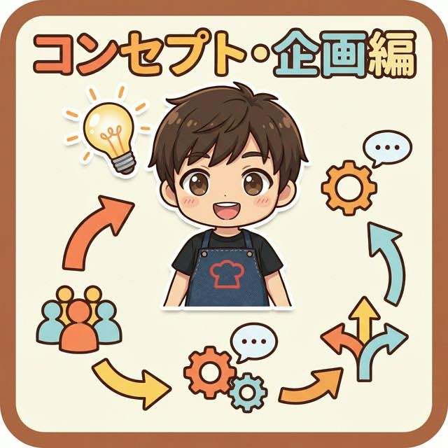

なべの裏メルマガ 期間限定特典
これをやったら絶対伸びない！
SNS致命的NG行動30選チェックリスト

SNS（YouTube・Instagram・TikTok）を本気で伸ばして収益化したいなら、「やるべきこと」と同じくらい「やってはいけないこと（NG行動）」を知っておくことが重要です。
過去の私のように「半年間毎日投稿して登録者80人…」という絶望を味わわないために、以下の30個のNG行動をしていないか、今すぐチェックしてみましょう。
過去の私のように「半年間毎日投稿して登録者80人…」という絶望を味わわないために、以下の30個のNG行動をしていないか、今すぐチェックしてみましょう。
【マインド・スタンス編】（最も重要！）
-
1. 「簡単に稼げる」と思っているSNSは立派なビジネスであり甘くないということに気づく。そんな簡単に成果がでる世界なら成功者だらけで逆に旨味はない
-
2. 失敗を極端に恐れている最初は誰も見ていません。どんどん挑戦して失敗から学ぶべきです。炎上が怖い･･･。という人もいましたが、安心してください。最初は絶対誰にも見られません。
-
3. 他人の成功を妬む伸びている人からは「なぜ伸びているのか」を吸収しましょう。もう先人たちがSNSの正解をたくさんアップロードしてくれてます。嫉妬するのではなく学びの姿勢でチェック！！
-
4. 「自分には才能がない」と言い訳するSNSは才能ではなく「戦略」と「継続」です。私の過去動画みたければいつでも見せます！ひどすぎますｗ才能なんてなくてもここまでこれました
-
5. すぐに結果を求める最低でも半年〜1年は「種まき期間」だと覚悟しましょう。だれでも簡単。たった◯日で。こんなの全部ウソです。信じるだけ時間のムダです。
-
6. 視聴者ではなく「自分」にベクトルが向いている「私を見て！」ではなく「あなたに役立ちますよ」が基本です。発信を始めるとき99.999％の人は自分目線から始まります。それは当たり前ですが、それを相手目線に変えていくことこそがSNSを伸ばす大事な鍵
-
7. 「花」を売ろうとしているドリルを買う人は「穴」が欲しいのです。視聴者の「未来（ベネフィット）」を売りましょう。「花買ってください」ではなく「この花奥様にサプライズプレゼントすると喜ばれますよ」です
【コンセプト・企画編】

-
8. ターゲットが誰なのか決まっていない「みんなに見てほしい」は「誰にも刺さらない」と同義です。
-
9. コンセプトがブレブレ（浮気性）料理系なのに急にVlogを上げるなど、ジャンルを混ぜるのはNGです。あれもこれもやりたいならそれぞれチャンネルを作りましょう。
-
10. 自分が「作りたいもの」だけを作っている視聴者が「見たいもの」「求めているもの」を作らなければ伸びません。自己満足で伸ばせるのは芸能人と美女ぐらいですｗ
-
11. リサーチを全くしていない競合やトレンドを調べず、己の勘だけで戦うのは無謀です。というか時間のムダです
-
12. 「伸びた動画」を擦らない1つ当たったら、味付けを変えて何度も同じテーマをこすり倒すのが鉄則です。SNSは何度やっても伸びる企画は伸びます
-
13. 「チャンネル登録してください」と無意味にお願いする登録するメリットを提示せずに頼んでも誰も押しません。逆に登録したくなくなります。そうではなく相手に登録したいとおもわせるんです。
【サムネイル・タイトル編】
-
14. サムネイルに文字を詰め込みすぎているスマホで見た時に読めない文字はゴミと同じです。限界まで削りましょう。基本的にスマホ視聴です
-
15. タイトルとサムネイルの内容が被っているサムネで興味を引き、タイトルで補足・検索対策をするのが正解です
-
16. デザインにこだわりすぎて「何を伝えたいか」がわからない綺麗さよりも「クリックしたくなるか（感情が動くか）」が重要です
-
17. ターゲットに合っていないデザインをしている主婦向けなのにサイバーパンク風など、層に合わないトーンはクリックされません。ターゲットを明確にしてないとサムネイルもぶれまくります
-
18. 公開後、サムネやタイトルを変えまくる数日は我慢しましょう。伸びなかった動画も数日たって伸びることがあります。そしてなにより伸びなかったら「なぜ伸びなかったんだろう」というデータを取れます
【動画制作・編集編】
-
19. 冒頭の3秒で視聴者の心を掴んでいない今の視聴者は最初の数秒で「見るか離脱するか」を決めます。最初の自己満は辞めて本気の数秒を！ここができてないとどんないい動画でも存在していないのと同じ
-
20. 「えー」「あのー」などの無駄な間（無音）をカットしていないテンポが悪い動画は即ブラウザバックされます。無編集で伸ばせるのは芸能人と圧倒的美････笑
-
21. 音（BGMや効果音、環境音）にこだわっていない特に料理動画における「シズル感のある音」は画質以上に重要です。雑音や聞きにくい音は最強のストレスになります
-
22. スマホで見られることを想定していないテロップが小さすぎる、色が同化して読めないのは致命的です。パソコンで編集してると気づきにくいのでアップ前にスマホで必ずチェック
-
23. 完璧主義になりすぎて投稿頻度が落ちる70点の出来でも、まずは世に出して反応を見ることが大切です。何が伸びるか分からない
-
24. 編集の勉強をしない効率がとにかく大事です。編集技術を磨くだけで動画1本の完成度があがり時間も浮きます。とにかく自分が使ってる編集アプリの解説動画をチェックしよう！
【分析・運用編】
-
25. アナリティクス（データ）を全く見ていないクリック率、視聴維持率など、数字は残酷な真実を教えてくれます。正解はすべてアナリティクスの中にあります
-
26. 数字が落ちた原因を分析しない「なぜダメだったのか」を考えないと、同じ失敗を繰り返します。正解を増やすのではなく失敗を減らしていくのがSNS発信の肝です
-
27. プラットフォームの規約や仕様変更を無視する突然の収益化停止などのリスクを避けるため、ルールは必ず把握しましょう。伸びるからってテレビの動画使ったり著作権無視は絶対NG･･･。人生終わります
-
28. 1つのプラットフォーム（YouTubeのみ等）に依存しすぎている垢BANのリスクを考え、TikTokやInstagramへの横展開、メルマガ等の自社リスト構築が必須です。1つのコンテンツからどれだけコンテンツを増やせるかが大事！！
-
29. 視聴者のコメントを無視するコメント欄は宝の山です。次の企画のヒントや改善点が隠されています
-
30. 途中で諦めてしまう継続さえできれば、ほとんどのライバルは勝手に脱落していきます。これが最大の真理です！
以上が過去の自分に教えたいチェックリスト30選です。伸ばす秘密よりも伸びない理由を潰していく方が成功に近づいていきます。これから私のメルマガでは今回のチェックリストに入っていることをより詳細に伝えていきます。2日に1回メールが届くので楽しみにしておいてください。